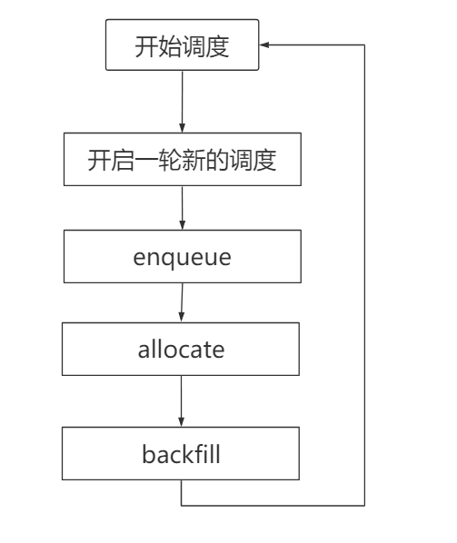
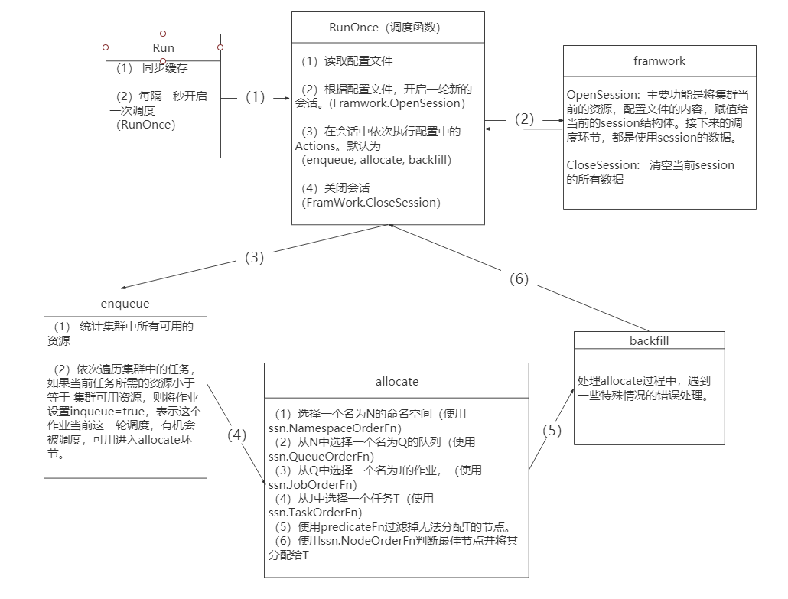

代码入口
1
2
3
4
|
cmd/sheduler/main.go:46 main -> cmd/sheduler/main.go:62 app.Run
cmd/sheduler/main.go:62 app.Run -> cmd/app/server.go:106 sched.Run
cmd/app/server.go:106 sched.Run -> pkg/scheduler/scheduler.go:64 Run
pkg/scheduler/scheduler.go:64 Run -> pkg/scheduler/scheduler.go:69 Run
|
代码 pkg/scheduler/scheduler.go:69 中的Run 才是开启调度程序的真正入口，它的实现如下：
1
2
3
4
5
6
7
8
9
|
// Run runs the Scheduler
func (pc *Scheduler) Run(stopCh <-chan struct{}) {
// 同步cache，缓存节点，pod，job等信息
go pc.cache.Run(stopCh)
pc.cache.WaitForCacheSync(stopCh)
//真正的调度核心，意思是没隔pc.schedulePeriod（1秒），就开启一次调度（pc.runOnce）.收到stopCh信 //号才停止
go wait.Until(pc.runOnce, pc.schedulePeriod, stopCh)
}
|
真正的调度函数 pc.runOnce
1
2
3
4
5
6
7
8
9
10
11
12
13
14
15
16
17
18
19
20
|
func (pc *Scheduler) runOnce() {
klog.V(4).Infof("Start scheduling ...")
scheduleStartTime := time.Now()
defer klog.V(4).Infof("End scheduling ...")
defer metrics.UpdateE2eDuration(metrics.Duration(scheduleStartTime))
// 导入配置文件
pc.loadSchedulerConf()
//根据配置文件的plugins(gang,drf等)，已经cache，开启一轮新的 会话
ssn := framework.OpenSession(pc.cache, pc.plugins)
defer framework.CloseSession(ssn)
//依次执行配置文件中的指定的actions。现在默认是（enqueue,allocate,backfill）
for _, action := range pc.actions {
actionStartTime := time.Now()
action.Execute(ssn)
metrics.UpdateActionDuration(action.Name(), metrics.Duration(actionStartTime))
}
}
|
volcano调度流程图

代码流程图

说明：
（1）在每轮session调度期间，使用的都是缓存中的数据，如果这个时候集群资源更新了，当前session中的数据不会更新
（2）enqueue的作用就是，根据当前集群资源情况预先筛选出一部分作业。集群资源更新相关的代码都要在这里修改。
（3）allocate负责真正的pod 调度过程。调度逻辑相关的代码需要在这里修改。